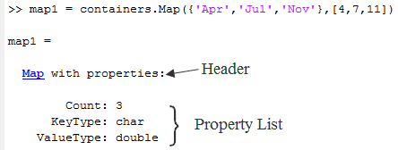
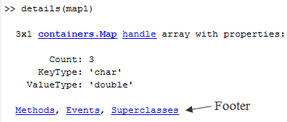

Custom Display Interface
Command Window Display
MATLAB® displays information in the command window when a statement that is not terminated with a semicolon returns a variable. For example, this statement creates a structure with a field that contains the number 7.
a.field1 = 7
MATLAB displays the variable name, class, and the value.
a =
struct with fields:
field1: 7MATLAB provides user-defined classes with similar display functionality. User-defined classes can customize how MATLAB displays objects of the class using the API provided by the matlab.mixin.CustomDisplay class. To use this API, derive your class from matlab.mixin.CustomDisplay.
Default Object Display
MATLAB adds default methods named disp and display to all MATLAB classes that do not implement their own methods with those names. These methods are not visible, but create the default simple display.
The default simple display consists of the following parts:
A header showing the class name, and the dimensions for nonscalar arrays.
A list of all nonhidden public properties, shown in the order of definition in the class.
The actual display depends on whether the object is scalar or nonscalar. Also, there are special displays for a scalar handle to a deleted object and empty object arrays. Objects in all of these states are displayed differently if the objects have no properties.
The details function creates the default detailed display. The detailed display adds these items to the simple display:
Use of fully qualified class names
Link to
handleclass, if the object is a handleLinks to
methods,events, andsuperclassesfunctions executed on the object.
See Class with Default Object Display for an example of how MATLAB displays objects.
Properties Displayed by Default
MATLAB displays object properties that have public get access and are not hidden (see Property Attributes). Inherited abstract properties are excluded from display. When the object being displayed is scalar, any dynamic properties attached to the object are also included.
CustomDisplay Class
The matlab.mixin.CustomDisplay class provides an interface that you can use to customize object display for your class. To use this interface, derive your class from CustomDisplay:
classdef MyClass < matlab.mixin.CustomDisplay
The CustomDisplay class is HandleCompatible, so you can use it in combination with both value and handle superclasses.
Note
You cannot use matlab.mixin.CustomDisplay to derive a custom display for enumeration classes.
disp, display, and details
The CustomDisplay interface does not allow you to override
disp, display, and
details. Instead, override any combination of the customization
methods defined for this purpose.
Methods for Customizing Object Display
There are two groups of methods that you use to customize object display for your class:
Part builder methods build the strings used for the standard display. Override any of these methods to change the respective parts of the display.
State handler methods are called for objects in specific states, like scalar, nonscalar, and so on. Override any of these methods to handle objects in a specific state.
All of these methods have protected access and must be defined as protected in your subclass of CustomDisplay (that is, Access = protected).
Parts of an Object Display
There are three parts that makeup the standard object display — header, property list, and footer
For example, here is the standard object display for a containers.Map object:

The default object display does not include a footer. The detailed display provides more information:

You can customize how MATLAB displays objects as a result of expressions that display objects in the
command window such as unterminated statements that return objects or calls to
disp and
display. The results displayed when calling details on an object or object array are not changed by the
CustomDisplay API.
Part Builder Methods
Each part of the object display has an associated method that assembles the respective part of the display.
| Method | Purpose | Default |
|---|---|---|
| Create the text used for the header. | Returns the |
| Define how and what properties display, including order, values, and grouping. | Returns an array of |
| Create the text used for the footer. | There are two footers:
|
Object States That Affect Display
There are four object states that affect how MATLAB displays objects:
Valid scalar object
Nonscalar object array
Empty object array
Scalar handle to a deleted object
State Handler Methods
Each object state has an associated method that MATLAB calls whenever displaying objects that are in that particular state.
| State Handler Method | Called for Object in This State |
|---|---|
displayScalarObject |
|
displayNonScalarObject |
|
displayEmptyObject |
|
displayScalarHandleToDeletedObject |
|
Utility Methods
The CustomDisplay class provides utility methods that return strings that are used in various parts of the different display options. These static methods return text that simplifies the creation of customized object displays.
If the computer display does not support hypertext linking, the strings are returned without the links.
| Method | Inputs | Outputs |
|---|---|---|
Valid object array | Object dimensions converted to a | |
| Displays the titles and property groups defined | |
Object | Simple class name linked to the object’s documentation | |
None | Text | |
Object | Text containing phrase | |
Object | Text containing linked class name, link to handle page (if handle class) and | |
None | Text | |
Object | Text containing linked class name and the phrase |